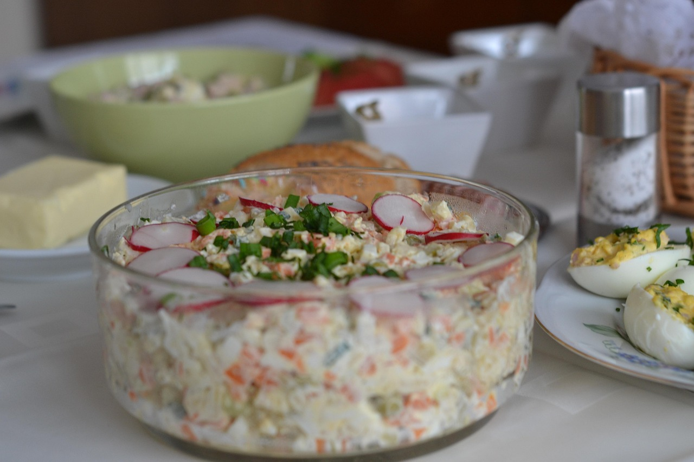

Home
Egg salad

Description
This simple yet delicious egg salad is made with perfectly boiled eggs,
creamy mayonnaise, a touch of mustard, and a sprinkle of fresh herbs for
flavor. It's rich, tangy, and satisfying—ideal for sandwiches, wraps, or
as a protein-packed side dish. Ready in minutes and endlessly customizable,
this timeless recipe is a go-to for quick lunches or light meals.
Ingredients
- 8 large eggs
- ½ cup mayonnaise
- ¼ cup chopped green onion
- 1 teaspoon prepared yellow mustard
- ¼ teaspoon paprika
- salt and pepper to taste
Steps
- Gather all ingredients.
- Place eggs in a saucepan and cover with cold water. Bring water to a
boil and immediately remove from heat. Cover and let eggs stand in hot water
for 10 to 12 minutes.
- Remove eggs from hot water; cool, peel, and chop.
- Place chopped eggs in a bowl; stir in mayonnaise, green onion, and
mustard. Season with paprika, salt, and pepper.
- Stir and serve on your favorite bread, crackers, or salad greens.